记一次VPN引发的内网突破
以下文章来源于酒仙桥六号部队 ，作者六号刃部
知其黑，守其白。 分享知识盛宴，闲聊大院趣事，备好酒肉等你！
一、前言
本文记录某项目，在开始尝试各类漏洞未果的情况下，利用平台的逻辑缺陷，打造出一份高质量的用户名和密码字典，巧妙的通过VPN突破内网的经历。
二 、背景
经过客户授权，于x月xx日-xx日对客户系统进行了渗透评估，通过模拟真实网络攻击行为，评估系统是否存在可以被攻击者利用的漏洞以及由此因此引发的风险大小，为制定相应的安全措施与解决方案提供实际的依据。客户要求只允许针对官方门户网站两个主域名进行攻击，确保不影响其他子公司业务，严禁对非指定系统和地址进行攻击，严禁使用对业务有高风险的攻击手法。
三、信息收集
子域名/IP信息收集
通过对客户提供的两个域名，进行前期的信息收集，扩大可利用范围，这里使用OneForAll、fofa、搜索引擎等工具收集到以下相关的域名与IP地址。
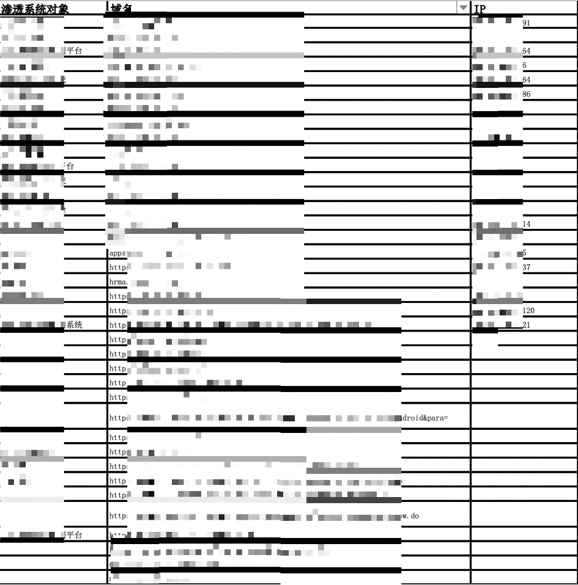
随即祭出goby扫描上述IP地址C段、端口等信息后进行汇总整理。
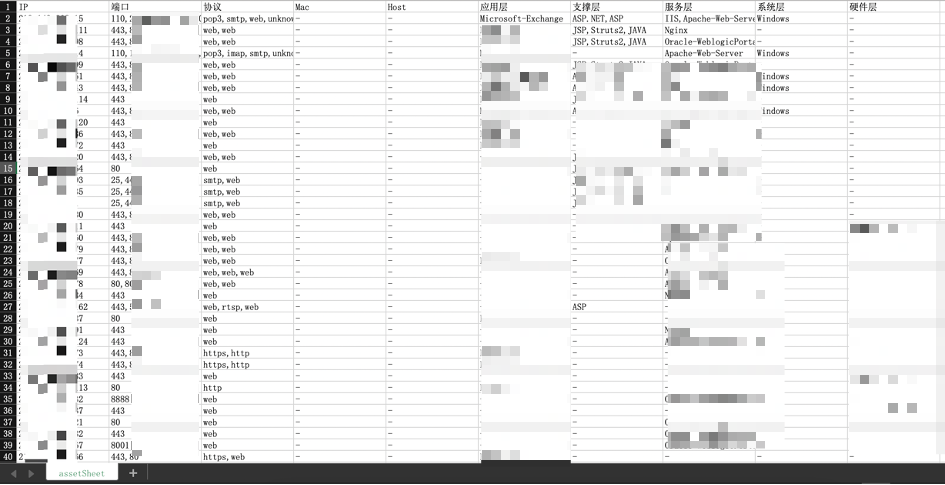
App/公众号信息收集
通过天眼查、七麦数据获取到部分App、微信公众号。
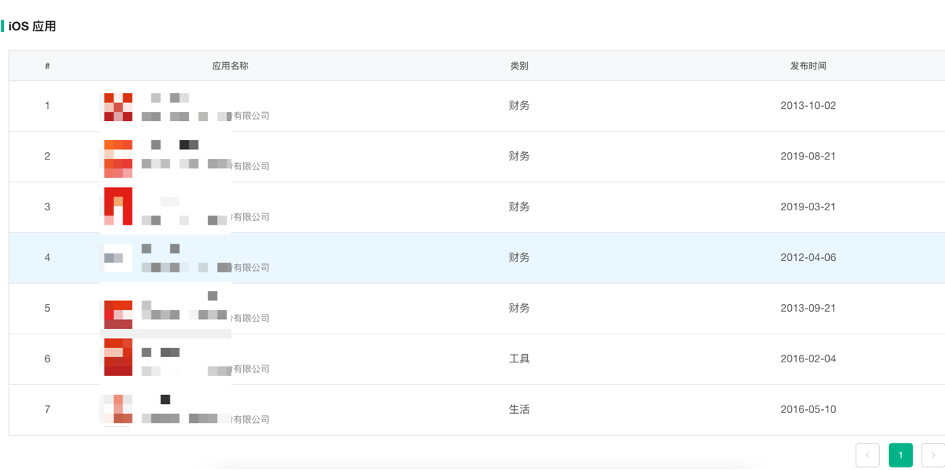
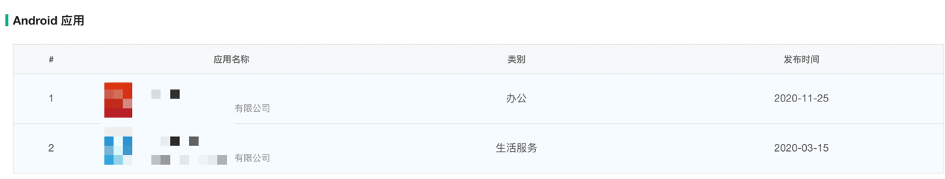
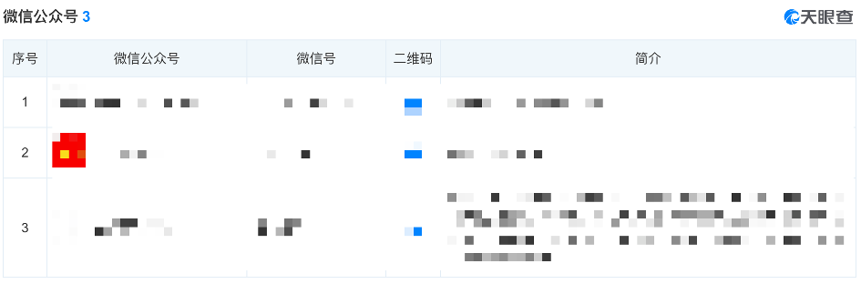
使用ApkAnalyser提取安卓应用中可能存在的敏感信息，并对其关键信息进行汇总。
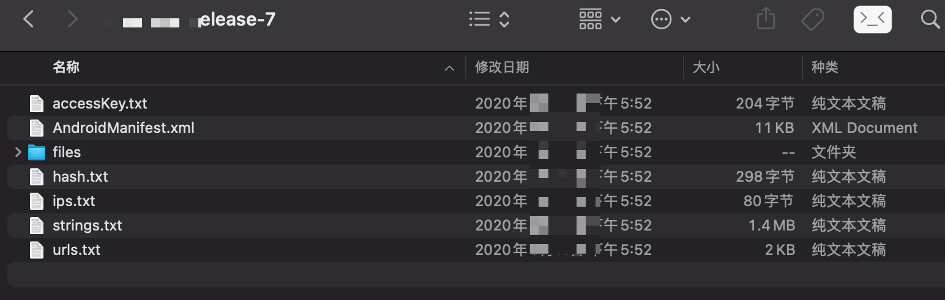
GitHub/网盘信息收集
使用github搜索目标的关键字，获取到部分信息。
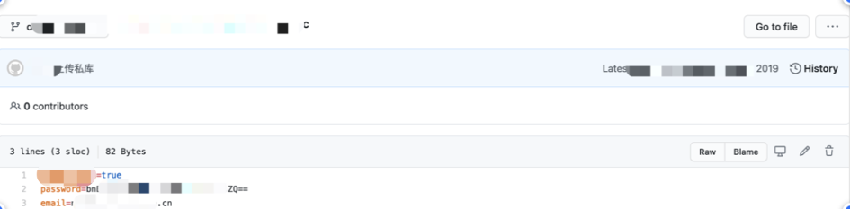
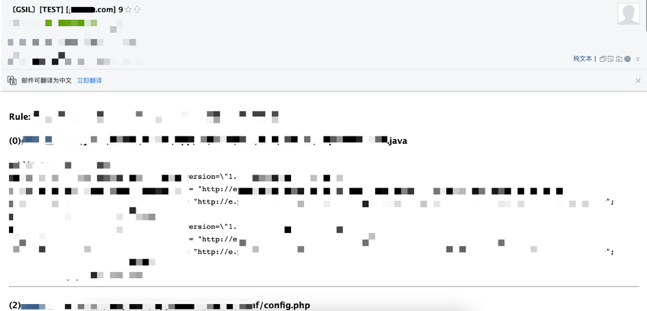
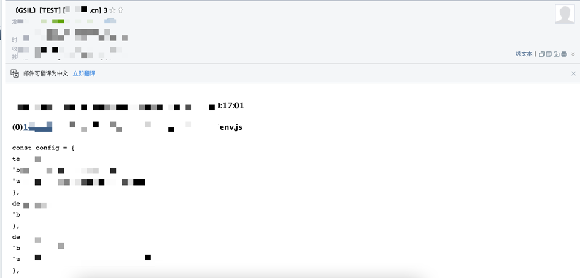
四、漏洞挖掘
站点A渗透
通过前面的信息收集整理后，我们梳理出几个关键的系统进行深入测试，在该福利平台登陆页面随意提交用户名及密码并进行抓包分析。
发现该请求包对应的响应包存在缺陷验证，通过修改响应包的值从而突破原有错误信息的拦截，使用admin用户，成功进入后台。
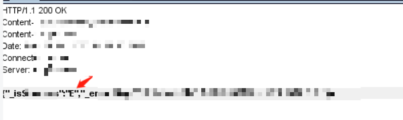
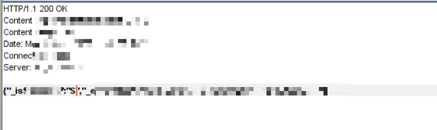
进入后台后，尝试寻找上传点，一番搜寻后，并未找到。在点击系统管理，尝试新建用户时，发现系统自动填充了默认密码。
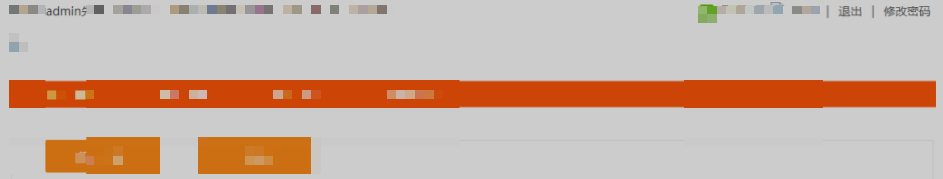
拿到该后台的默认登录口令，我们根据初始密码的特征，构造出了一份高质量密码字典，为下一步去爆破其他后台和邮箱系统做好铺垫。
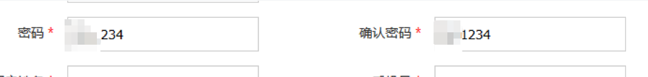
站点B渗透
在测试的过程中，发现某销售平台登陆处存在逻辑缺陷，可以对用户账户和密码进行暴力破解。通过在站点A得到的系统默认密码构造的字典，成功爆破出8个普通权限的账户。
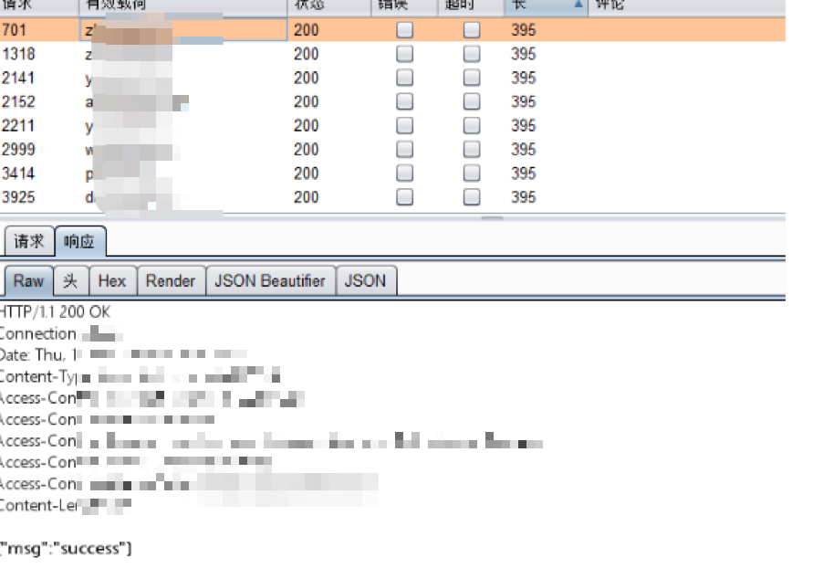
登录其中一个账户，发现该平台在用户管理位置，存在大量内部员工的信息，其中包含中文姓名，利用python脚本将中文姓名批量转换成拼音，定制出一份高质量的用户名字典。
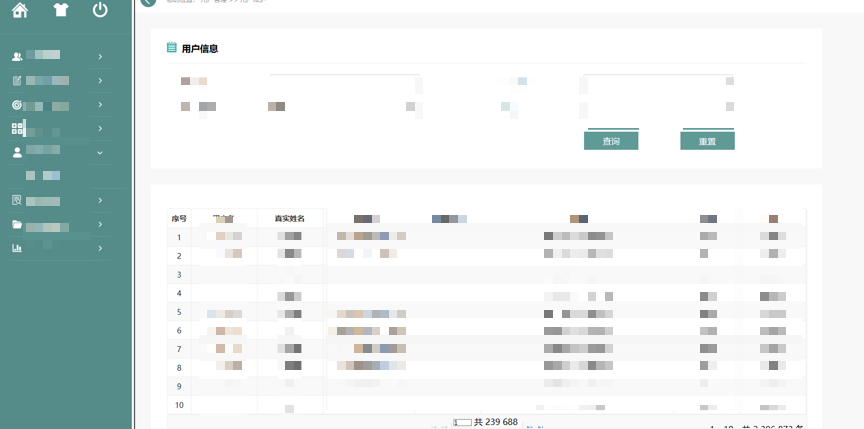
站点C渗透
在前面收集的过程当中，我们发现目标使用的是outlook邮箱，且邮箱登陆存在登陆存在缺陷，没有验证码等防护，可以直接进行暴力破解用户账户和密码，这里我们用python转换成姓名拼音，构造字典进行爆破，在爆破的过程当中调低线程，且用固定密码跑用户名，成功跑出了一批有效的邮箱账户。
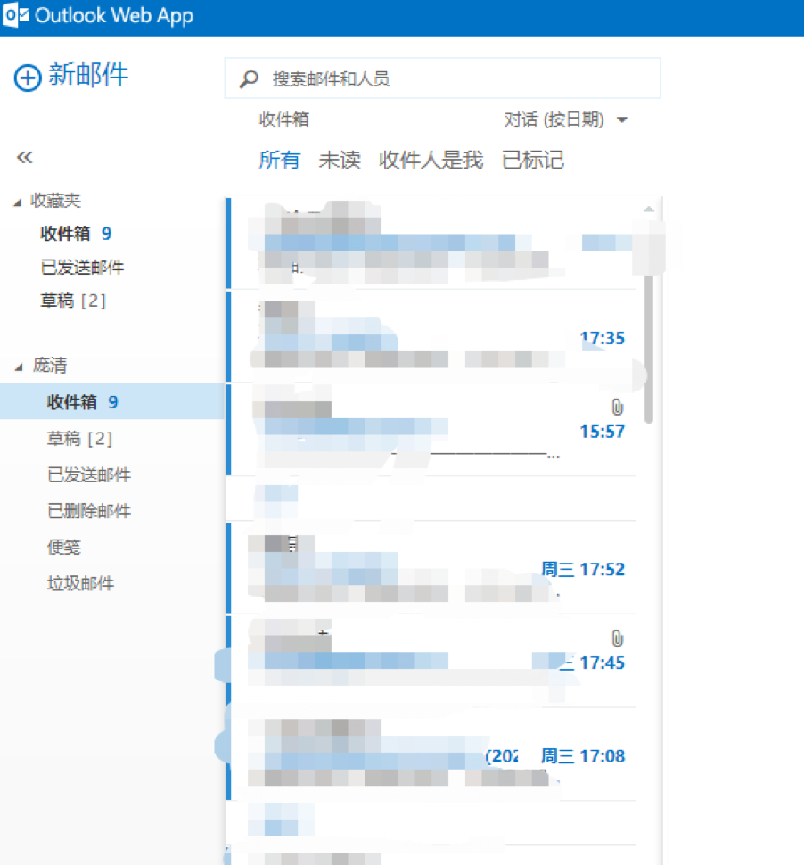
用出来的账户，成功登陆邮箱，通过邮箱通讯录获得大量内部用户名，并进行其他各类有效信息的收集整理。
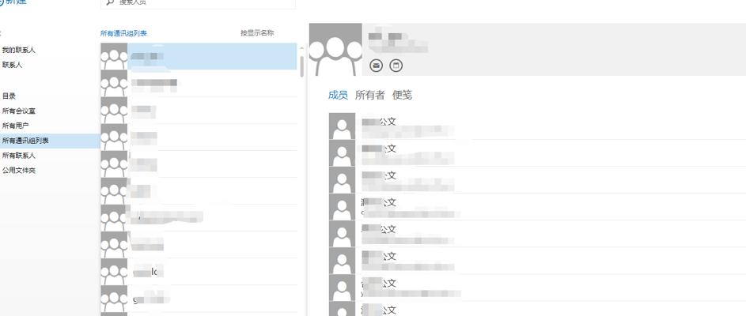
站点D渗透
到这一步的时候，我们在web站点上的收获并不是太大，没有能直接获取到shell的点，于是我们把目光转向前期收集到的APP上。
下载相关的app,并用在web站点收集到的的用户信息，成功撞出了某用户密码为xxx的账号，发现可以登录目标的APP，使用某用户的账号密码可成功登录。在APP中的通知公告部分发现了一个移动办公平台停机维护的通知，并写明其VPN登录地址和注册地址。登录地址：xxx 注册地址：xxx
看到这个信息，心里一喜，感觉前方有路，随手用浏览器访问一下移动平台的登录地址跟注册地址，没毛病，可以成功进行访问。由于前期进行信息收集的时候也收集到一个vpn的登陆地址，目前根据这份通知可以确定，目标近期做了vpn登陆方式的变更，猜测目前可能有部分员工还没有完成登陆方式的变更，可能是一个突破口，于是我们把精力放在VPN这个点。
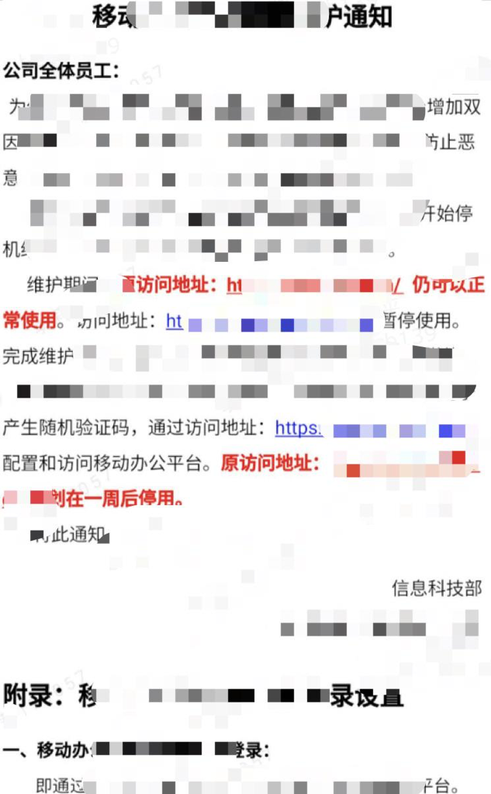
五、突破内网
VPN绑定设备
在多方试依旧没有找到突破点的时候，对我们刚刚获取到新vpn地址进行测试，利用之前收集到账户跟密码尝试登陆，发现需要通行码才可以进行下一步，现在需要考虑怎么拿到用户的通行码。
在注册地址处分析注册流程，发现可以对正确的用户跟密码进行绑定设备从而得到通行码，流程为下图所示，密码错误的时候会提示请重试或联系技术人员。
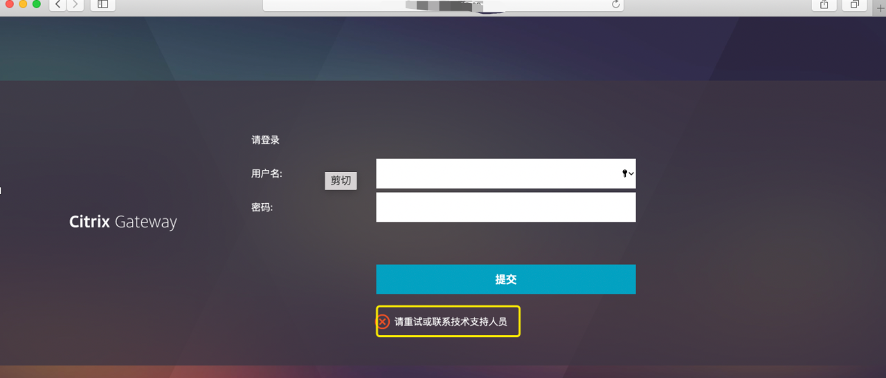
在账户跟密码正确的时候，这里使用账号密码xxx/xxx可以直接进行设备绑定，这一步值得一提的是最开始尝试我们已经搜集到的账号密码均不能成功进行登陆，差一点放弃，后来不甘心，重新梳理了一遍流程，从之前所有能登陆的邮箱再次搜集到几个有效账号密码后，最终找到两个具有vpn权限的有效账号，随之进行下一步。
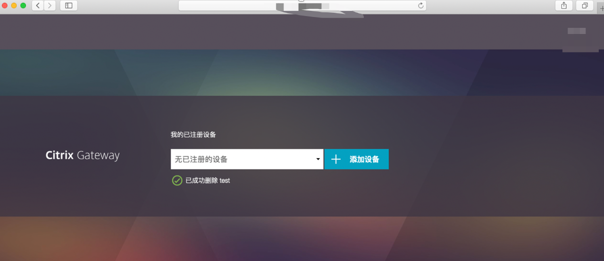
在自己手机上下载好移动办公平台维护通知中提到的workspace和Authenticator软件后，接着在设备页面这里选择添加设备名为test。
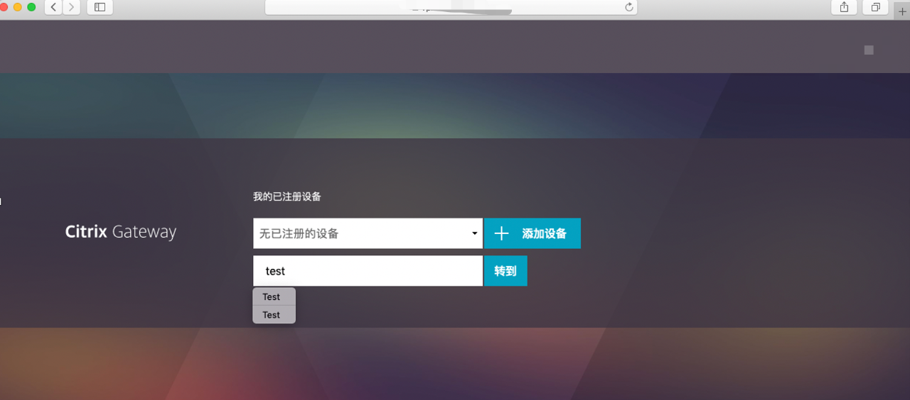
打开手机上的Authenticator扫描其中生成的二维码，点击进行绑定后，即可获得该用户的通行码。
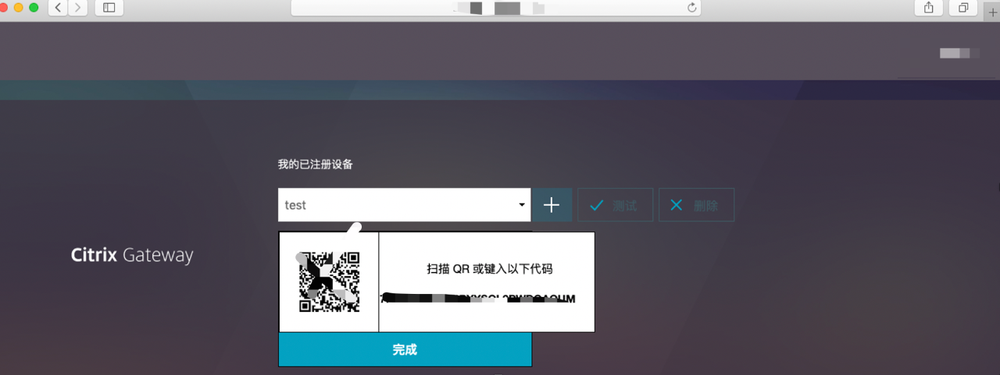
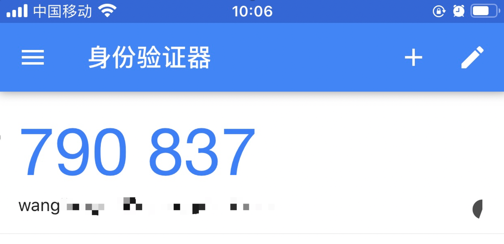
登录移动办公平台
在绑定设备后，拿到通行码，现在使用xxxx/xxxx这个用户在地址进行登录。
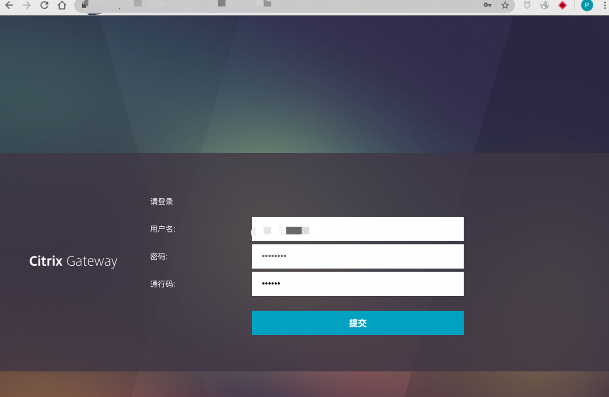
成功通过vpn登录移动办公平台，在其中发现核心业务系统、人管系统、数据报表平台、运维平台、OA系统等等内网系统的操作权限。

选择详情信息，打开IT运维管理系统，发现需要安装citrixReceiver下载citrixReceiverWeb.dmg进行安装。
在成功安装后，再次打开IT运维管理系统即可正常访问内网业务，对其他的核心业务系统、人管系统、数据报表平台进行访问，发现均可正常访问，成功的突破到内网。
登录内网IT运维管理平台
使用收集到的账号跟密码，尝试登录IT运维管理平台，可成功登录，登录账号，xxx/xxx，xxxx/xxxx登录成功后通过工单查询进行信息收集整理。
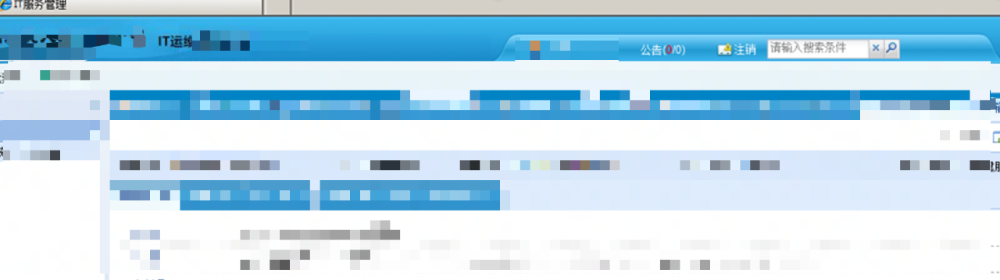
登录内网OA平台
通过在IT运维管理平台收集到的用户跟密码，使用xxxx/xxxx登录,成功登录OA系统。
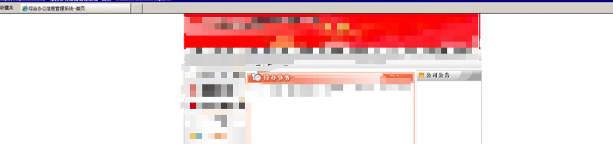
登录内网数据报表系统
- 依旧使用在运维管理平台中收集并整理的信息，使用xxxx/xxxx可成功登录内网数据报表系统。
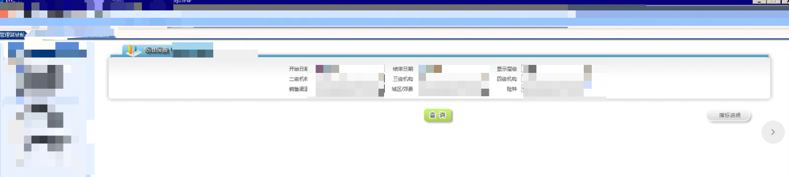
通过chrome浏览器调用cmd
在逐个测试的过程中，发现核心业务系统是可以通过chrome浏览器打开的。
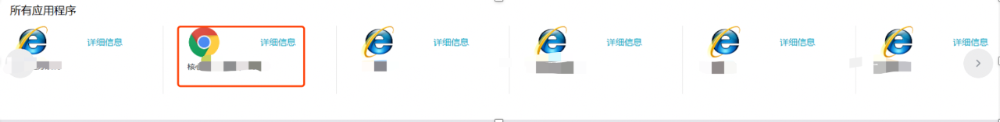
这里使用chrome的开发者模式选择加载已解压的扩展程序，调出Windows服务器的文件夹，在文件夹中输入cmd回车可直接调出cmd窗口。经过测试发现，这种情况下是会把本地磁盘进行共享，并且可以双向复制粘贴，因此可以直接把相关工具拖入内网，也可以把内网的东西拖入到本地，到这一步就舒服了.....
首先使用ipconfig/all可看到当前所在机器地址及相关信息。
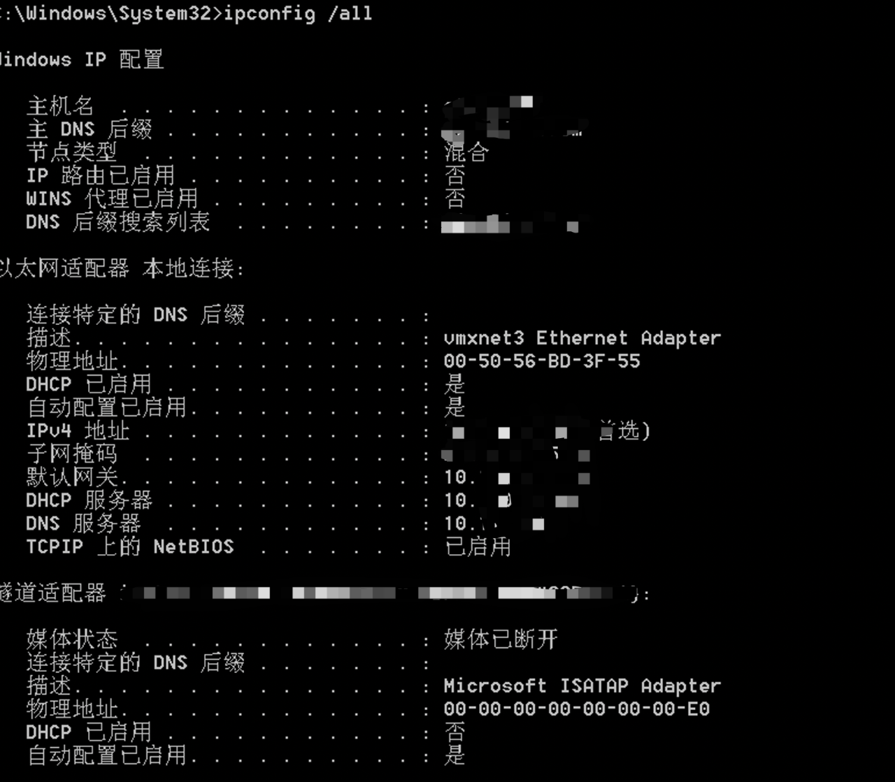
由于下一步的内网操作相对敏感、危害性大，我们经过跟客户沟通后，客户经过评估，客户叫停了后续的测试。
六、总结
本次测试过程大致如下：
1、 经过前期web站点的信息收集，和漏洞挖掘后，获取到部分账户跟密码。
2、 在某个内部app当中获取VPN变更后的地址。
3、 尝试未绑定的员工账户进行VPN绑定，最终找到一个运维权限的账户。
4、 成功登陆Citrix Gateway,并具有了内网系统的访问权限。
5、 使用chrome的开发者模式调用cmd,测试后，发现可以进行磁盘共享。

点赞 在看 转发